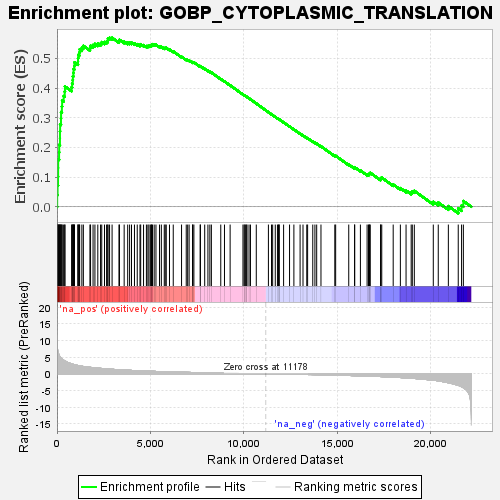
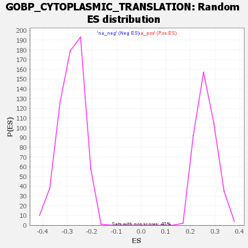

| | | Dataset | deseq_dnfgfr_res_for_gsea |
| Phenotype | NoPhenotypeAvailable |
| Upregulated in class | na_pos |
| GeneSet | GOBP_CYTOPLASMIC_TRANSLATION |
| Enrichment Score (ES) | 0.5695814 |
| Normalized Enrichment Score (NES) | 2.1644192 |
| Nominal p-value | 0.0 |
| FDR q-value | 0.0031335321 |
| FWER p-Value | 0.003 |
Table: GSEA Results Summary

Fig 1: Enrichment plot: GOBP_CYTOPLASMIC_TRANSLATION
Profile of the Running ES Score & Positions of GeneSet Members on the Rank Ordered List
| SYMBOL | RANK IN GENE LIST | RANK METRIC SCORE | RUNNING ES | CORE ENRICHMENT | | 1 | Rps12 | 10 | 8.700 | 0.0399 | Yes |
| 2 | Eif3i | 32 | 7.295 | 0.0728 | Yes |
| 3 | Eif4a2 | 56 | 6.406 | 0.1015 | Yes |
| 4 | Rplp0 | 61 | 6.352 | 0.1308 | Yes |
| 5 | Cnbp | 63 | 6.318 | 0.1601 | Yes |
| 6 | Paip1 | 112 | 5.557 | 0.1837 | Yes |
| 7 | Rpl5 | 119 | 5.468 | 0.2088 | Yes |
| 8 | Rpl3 | 157 | 5.121 | 0.2309 | Yes |
| 9 | Drg1 | 159 | 5.118 | 0.2546 | Yes |
| 10 | Rpl26 | 167 | 5.044 | 0.2777 | Yes |
| 11 | Eif3m | 213 | 4.716 | 0.2975 | Yes |
| 12 | Rpl4 | 218 | 4.697 | 0.3191 | Yes |
| 13 | Rwdd1 | 262 | 4.453 | 0.3378 | Yes |
| 14 | Rps6 | 275 | 4.422 | 0.3578 | Yes |
| 15 | Csde1 | 355 | 4.056 | 0.3730 | Yes |
| 16 | Rpl7 | 413 | 3.849 | 0.3883 | Yes |
| 17 | Rps7 | 426 | 3.817 | 0.4055 | Yes |
| 18 | Rps4x | 782 | 2.942 | 0.4030 | Yes |
| 19 | Etf1 | 810 | 2.904 | 0.4153 | Yes |
| 20 | Rps15a | 842 | 2.854 | 0.4271 | Yes |
| 21 | Eif2s2 | 849 | 2.841 | 0.4400 | Yes |
| 22 | Rpl35a | 879 | 2.770 | 0.4515 | Yes |
| 23 | Rps23 | 885 | 2.761 | 0.4641 | Yes |
| 24 | Ncbp2 | 930 | 2.696 | 0.4746 | Yes |
| 25 | Eif3d | 936 | 2.679 | 0.4868 | Yes |
| 26 | Rpl14 | 1123 | 2.459 | 0.4898 | Yes |
| 27 | Rps8 | 1126 | 2.456 | 0.5011 | Yes |
| 28 | Fau | 1138 | 2.443 | 0.5120 | Yes |
| 29 | Rpl8 | 1199 | 2.375 | 0.5203 | Yes |
| 30 | Rps3 | 1212 | 2.365 | 0.5307 | Yes |
| 31 | Eif2s3x | 1330 | 2.254 | 0.5358 | Yes |
| 32 | Rpl12 | 1410 | 2.175 | 0.5423 | Yes |
| 33 | Denr | 1762 | 1.931 | 0.5354 | Yes |
| 34 | Rps26 | 1795 | 1.910 | 0.5428 | Yes |
| 35 | Rpl27 | 1929 | 1.821 | 0.5452 | Yes |
| 36 | Ncbp1 | 2029 | 1.763 | 0.5489 | Yes |
| 37 | Rps3a1 | 2183 | 1.678 | 0.5497 | Yes |
| 38 | Nck1 | 2330 | 1.609 | 0.5505 | Yes |
| 39 | Rps5 | 2394 | 1.574 | 0.5550 | Yes |
| 40 | Rpl10a | 2541 | 1.490 | 0.5553 | Yes |
| 41 | Rpl13a | 2653 | 1.448 | 0.5569 | Yes |
| 42 | Rps11 | 2716 | 1.423 | 0.5607 | Yes |
| 43 | Pabpc1 | 2727 | 1.418 | 0.5669 | Yes |
| 44 | Rpl17 | 2812 | 1.387 | 0.5695 | Yes |
| 45 | Dph3 | 2947 | 1.333 | 0.5696 | Yes |
| 46 | Ftsj1 | 3316 | 1.200 | 0.5584 | No |
| 47 | Rpl9 | 3341 | 1.191 | 0.5629 | No |
| 48 | Rpl18 | 3593 | 1.108 | 0.5566 | No |
| 49 | Rpl22 | 3782 | 1.052 | 0.5530 | No |
| 50 | Zc3h15 | 3884 | 1.022 | 0.5531 | No |
| 51 | Rplp2 | 3986 | 0.992 | 0.5531 | No |
| 52 | Rps14 | 4144 | 0.953 | 0.5504 | No |
| 53 | Rpl30 | 4293 | 0.915 | 0.5480 | No |
| 54 | Rpl18a | 4439 | 0.881 | 0.5455 | No |
| 55 | Dph6 | 4477 | 0.873 | 0.5478 | No |
| 56 | Rpl15 | 4630 | 0.835 | 0.5448 | No |
| 57 | Rps20 | 4783 | 0.799 | 0.5416 | No |
| 58 | Rpl24 | 4863 | 0.782 | 0.5417 | No |
| 59 | Rpl32 | 4921 | 0.768 | 0.5426 | No |
| 60 | Lin28a | 4996 | 0.751 | 0.5428 | No |
| 61 | Rps25 | 5050 | 0.739 | 0.5438 | No |
| 62 | Eif2b3 | 5062 | 0.737 | 0.5467 | No |
| 63 | Rpl39 | 5110 | 0.726 | 0.5479 | No |
| 64 | Pabpc6 | 5199 | 0.709 | 0.5472 | No |
| 65 | Rpl19 | 5294 | 0.687 | 0.5462 | No |
| 66 | Fmr1 | 5485 | 0.652 | 0.5405 | No |
| 67 | Rpl11 | 5582 | 0.631 | 0.5391 | No |
| 68 | Slbp | 5738 | 0.601 | 0.5349 | No |
| 69 | Rpl29 | 5790 | 0.592 | 0.5353 | No |
| 70 | Syncrip | 5845 | 0.583 | 0.5356 | No |
| 71 | Rpl7a | 6018 | 0.555 | 0.5303 | No |
| 72 | Rps2 | 6219 | 0.522 | 0.5237 | No |
| 73 | Eif4h | 6663 | 0.456 | 0.5057 | No |
| 74 | Rpl31 | 6914 | 0.420 | 0.4963 | No |
| 75 | Eif5 | 6991 | 0.408 | 0.4947 | No |
| 76 | Rpl34 | 7068 | 0.399 | 0.4931 | No |
| 77 | Cpeb1 | 7249 | 0.374 | 0.4867 | No |
| 78 | Eef2 | 7266 | 0.371 | 0.4877 | No |
| 79 | Dph2 | 7323 | 0.364 | 0.4868 | No |
| 80 | Eif4b | 7659 | 0.319 | 0.4731 | No |
| 81 | Eif4a1 | 7674 | 0.316 | 0.4739 | No |
| 82 | Rpl6 | 7902 | 0.294 | 0.4650 | No |
| 83 | Rpl36a | 8074 | 0.271 | 0.4585 | No |
| 84 | Dph5 | 8178 | 0.256 | 0.4550 | No |
| 85 | Dhx29 | 8259 | 0.247 | 0.4525 | No |
| 86 | Rps19 | 8761 | 0.183 | 0.4306 | No |
| 87 | Zcchc13 | 8960 | 0.161 | 0.4223 | No |
| 88 | Eif4ebp1 | 9262 | 0.140 | 0.4093 | No |
| 89 | Rpl27a | 9949 | 0.067 | 0.3785 | No |
| 90 | Mcts2 | 10010 | 0.061 | 0.3760 | No |
| 91 | Rps16 | 10051 | 0.057 | 0.3745 | No |
| 92 | Rps13 | 10076 | 0.055 | 0.3736 | No |
| 93 | Rpl23 | 10148 | 0.047 | 0.3706 | No |
| 94 | Rps18 | 10161 | 0.046 | 0.3703 | No |
| 95 | Rps27a | 10273 | 0.035 | 0.3654 | No |
| 96 | Hnrnpd | 10350 | 0.030 | 0.3621 | No |
| 97 | Pabpc2 | 10661 | 0.004 | 0.3481 | No |
| 98 | Rpsa | 11310 | -0.014 | 0.3187 | No |
| 99 | Rps17 | 11476 | -0.031 | 0.3114 | No |
| 100 | Mettl3 | 11538 | -0.038 | 0.3088 | No |
| 101 | Mif4gd | 11677 | -0.053 | 0.3027 | No |
| 102 | Rps9 | 11794 | -0.065 | 0.2978 | No |
| 103 | Rps24 | 11852 | -0.071 | 0.2955 | No |
| 104 | Rpl21 | 11879 | -0.074 | 0.2947 | No |
| 105 | Cpeb2 | 11885 | -0.075 | 0.2948 | No |
| 106 | Aars | 12123 | -0.100 | 0.2845 | No |
| 107 | Rpl41 | 12441 | -0.109 | 0.2706 | No |
| 108 | Rpl13 | 12673 | -0.131 | 0.2607 | No |
| 109 | Igf2bp1 | 13005 | -0.168 | 0.2465 | No |
| 110 | Rpl36 | 13161 | -0.187 | 0.2403 | No |
| 111 | Rpl37a | 13362 | -0.212 | 0.2322 | No |
| 112 | Dph1 | 13408 | -0.217 | 0.2312 | No |
| 113 | Mcts1 | 13683 | -0.234 | 0.2198 | No |
| 114 | Uba52 | 13798 | -0.249 | 0.2158 | No |
| 115 | Cpeb3 | 13893 | -0.261 | 0.2127 | No |
| 116 | Eif2d | 14122 | -0.290 | 0.2037 | No |
| 117 | Ythdf2 | 14862 | -0.389 | 0.1720 | No |
| 118 | Dhx36 | 14908 | -0.396 | 0.1718 | No |
| 119 | Rps21 | 15608 | -0.507 | 0.1424 | No |
| 120 | Rpl38 | 15922 | -0.553 | 0.1307 | No |
| 121 | Rpl22l1 | 15924 | -0.553 | 0.1333 | No |
| 122 | Rps15 | 16232 | -0.605 | 0.1221 | No |
| 123 | Rpl23a | 16590 | -0.671 | 0.1090 | No |
| 124 | Rbm4 | 16666 | -0.685 | 0.1088 | No |
| 125 | Rplp1 | 16701 | -0.690 | 0.1105 | No |
| 126 | Ckap5 | 16722 | -0.694 | 0.1128 | No |
| 127 | Dph7 | 16759 | -0.701 | 0.1144 | No |
| 128 | Rps10 | 17310 | -0.820 | 0.0932 | No |
| 129 | Dhx9 | 17322 | -0.824 | 0.0966 | No |
| 130 | Pkm | 17374 | -0.834 | 0.0981 | No |
| 131 | Cpeb4 | 17986 | -0.995 | 0.0750 | No |
| 132 | Drg2 | 18370 | -1.116 | 0.0628 | No |
| 133 | Hnrnpu | 18674 | -1.229 | 0.0547 | No |
| 134 | Eif2s3y | 18948 | -1.324 | 0.0485 | No |
| 135 | Rps29 | 19008 | -1.348 | 0.0520 | No |
| 136 | Rps28 | 19116 | -1.396 | 0.0537 | No |
| 137 | Rpl28 | 20131 | -1.917 | 0.0165 | No |
| 138 | Rbm24 | 20397 | -2.107 | 0.0143 | No |
| 139 | Zfp385a | 20937 | -2.676 | 0.0022 | No |
| 140 | Unk | 21466 | -3.470 | -0.0057 | No |
| 141 | Eif3a | 21644 | -3.869 | 0.0042 | No |
| 142 | Ybx1 | 21740 | -4.163 | 0.0193 | No |
Table: GSEA details [plain text format]

Fig 2: GOBP_CYTOPLASMIC_TRANSLATION: Random ES distribution
Gene set null distribution of ES for GOBP_CYTOPLASMIC_TRANSLATION